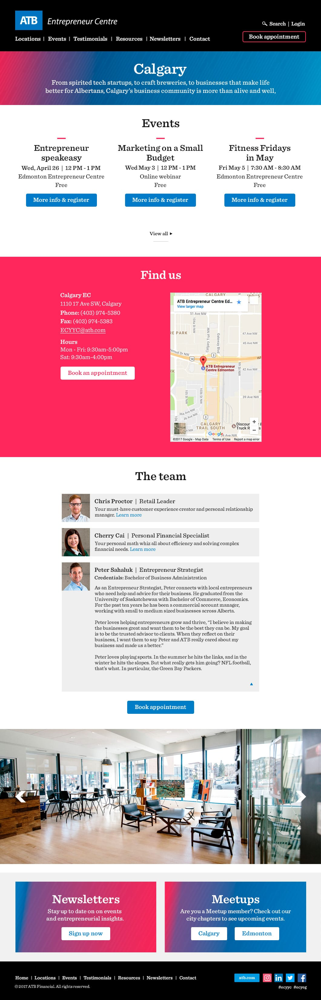

Project: ATB Entrepreneur Centre website redesign
ATB has Entrepreneur Centres across Alberta to cater to entrepreneurs' banking, retail, and wealth management needs.
Problems
One of the biggest problems with the existing website was that the process to book an appointment was broken.
The client also wanted a better experience to connect with entrepreneurs online and an attractive website to reflect their business savviness.

Who
The website served entrepreneurs at any stage looking for advice, community, and business banking products and support. The entrepreneurs are a mix of ATB customers and non ATB customers.
My role
I worked with a developer, a project manager, and with marketing managers. My responsibility was to ensure that we were delivering the right content to the customer and also to design the site in a way that the entrepreneur could easily find what they needed.
What
The biggest concerns were to fix the booking process and to leverage the website to easily connect with entrepreneurs.
Research: client interviews
I went through the provided website content and the existing website to better understand the goals. I wrote down any questions I had about the content and the new site and talked to the marketing managers.
Takeaways
Important notes from the client interviews included:
- a need for an area for entrepreneurs to download resources from articles and presentations,
- a need to keep in touch with entrepreneurs,
- a way to easily allow entrepreneurs easy access to sign up for events or to book an appointment with a business banker, and
- a list of the top goal(s) for each page in order to best organize and highlight the content.
Research: teammate interview
I also spoke to a teammate and asked them questions about how they would want to experience a site like this. The takeaways I received were:
- a feeling of professionalism to build trust,
- "content I need including guides and templates", and
- proof other people were happy with the services.
Suggestions
From this research, I proposed that:
- we get testimonials from entrepreneurs that had good experiences with the Entrepreneur Centre to show people they could trust the EC's abilities,
- we get photos of the centres so that people could be familiar with what it looks like and could be more comfortable visiting a centre,
- we make a main call to action button that shares with entrepreneurs that meeting with an employee is free so that it's clear that they don't need to pay to visit or to meet,
- we have events high on the home page for the user to find to help build the EC community,
- we have a resource section with PDFs, articles, and videos to help the entrepreneur with their needs, and
- we have a section on every page with links to the newsletter sign up and links to the event Meetups to help stay connected with the entrepreneur.
Research and wireframes
Now that we had some goals and solutions in mind, and after speaking to the marketing managers, I furthered my research with competitive analysis to get inspiration for the designs and content organization. I then began the wireframes and then presented them to the developer, and then to the marketing managers. Once signed off, I began the high fidelity mocks.
The homepage wireframe shows events, testimonials, and resources near the top to reflect the research findings.
The location wireframe displays shows the main CTA of booking an appointment, with events also near the top as the main goals.

The "Resources" wireframe shows different categories of resources with the ability to filter them. There is also a newsletter sign up and Meetup section at the bottom.
High fidelity
I kept the dark branding in the high fidelity styling and paired it with ATB's bright colours and fonts to keep it on brand. I also added textures and gradients to sections to add interest and to draw the eye to certain areas. Contrasted call to actions were created to attract users to the next step of what they're looking at. I used big icons to differentiate content and nice photography to show the interior of the centres.
Once the high fidelity mocks were approved, I created CSS styles for the developer to use.


Solution
The solution was a professional and on brand website with a CMS system for the team members to manage bookings, events, and resources. It also had valuable content for entrepreneurs to successfully leverage the Entrepreneur Centre for their business needs.
User data
The reason I designed things the way I did was based on my knowledge, the marketing managers' knowledge (including from their experience with customers), and from asking a teammate about their preferences. If I had more resources and time, I would have liked to get this data from users. I would have liked to know what content was the most important to them, if they could do everything they wanted to do, and if they could do what they wanted to easily- through scenario testing.